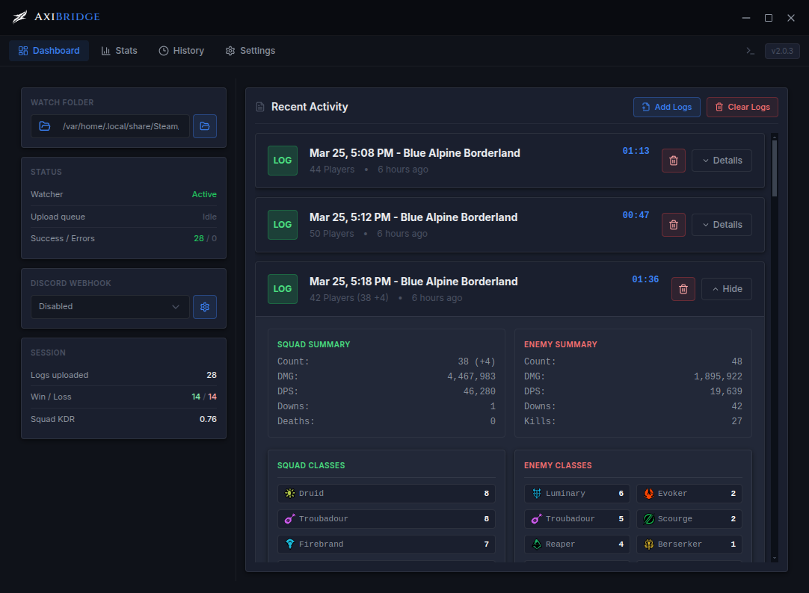

Automatic uploads
Watches your arcdps log folder and uploads every fight to dps.report as soon as it lands.
// WVW SQUAD TOOLING
Automatic log uploads, WvW fight breakdowns, and clean squad reports — in Discord or on the web, the moment the fight ends.
Watches your arcdps log folder and uploads every fight to dps.report as soon as it lands.
Squad vs enemy sizes, damage, downs/deaths, cleanses, strips, stability, healing — at a glance.
Top performers by role and stat category across every session you've recorded.
Clean embeds or shareable report images, posted straight to your server's channel.
Publish a GitHub Pages report your squad can revisit and link anytime. No server required.
Set your arcdps.cbtlogs folder in Configuration. That's it.
AxiBridge watches the folder and processes each new log to dps.report — no prompts, no clicks.
Post a Discord embed or publish a persistent web report. No game integration. No accounts.

A published squad report, built and pushed by AxiBridge. Opens in a new tab — web reports are wide and full of data.
OPEN SAMPLE REPORT →Yes. AxiBridge reads .evtc log files arcdps writes to disk and uploads them to dps.report. It does not read or write game memory and is not a game modification. Source is on GitHub under GPL-3.0.
No. It only watches a folder for new files that arcdps produces. Nothing is injected into Guild Wars 2.
arcdps is the standard third-party combat logging addon used by virtually every WvW and raid squad. It writes .evtc files when fights end. AxiBridge consumes those files. deltaconnected.com/arcdps.
To dps.report — the public log host the GW2 community uses. AxiBridge doesn't collect telemetry, doesn't run accounts, and doesn't transmit anything else.
Yes. GPL-3.0 licensed, free forever. No paid tier.
Loading recent releases…